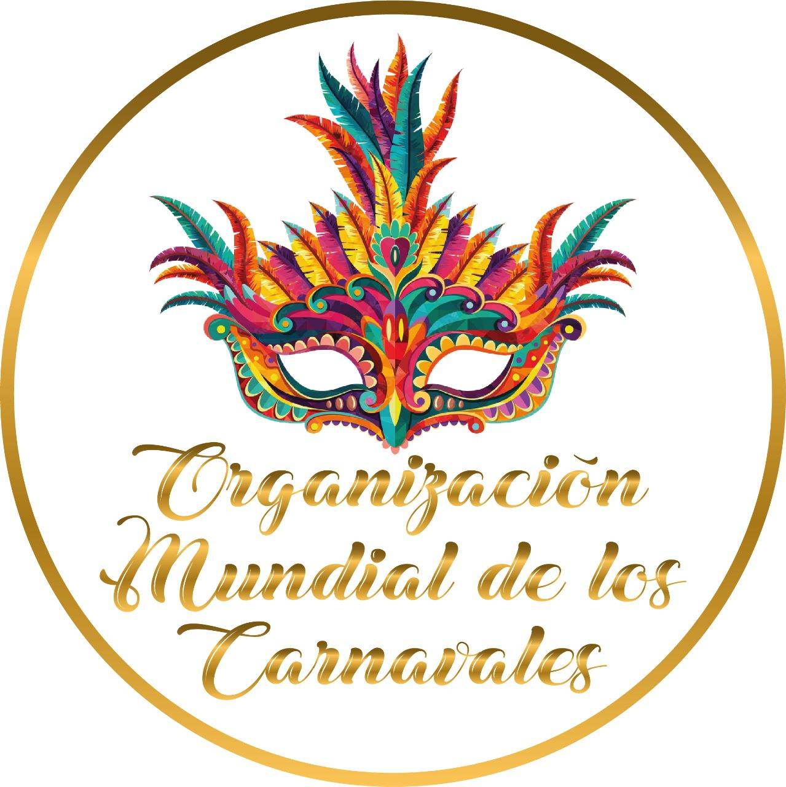
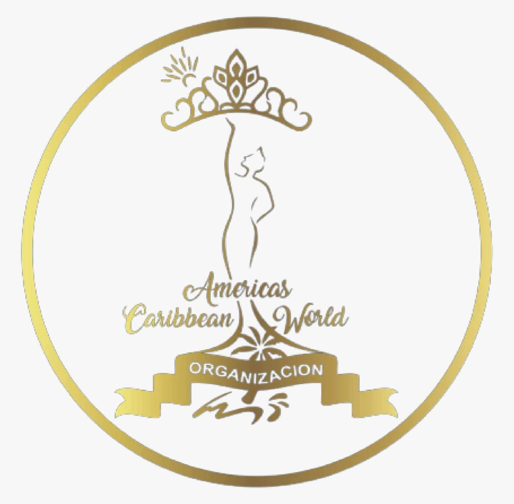
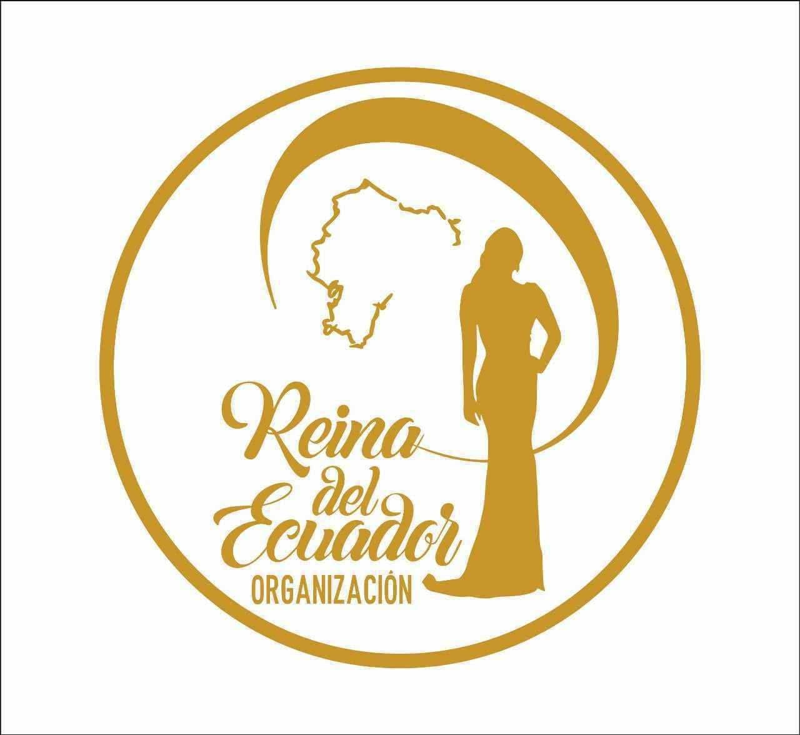

Dirección creativa
Concepto, narrativa y lenguaje visual para una experiencia con identidad propia.
Beauty · Culture · Live experiences
Dirección y producción de experiencias que convierten la belleza, la identidad y la cultura en momentos memorables.
Descubrir ↓Ecuador
Proyección internacional
Una visión, cada detalle
Dimas Espinosa Producciones articula concepto, identidad y puesta en escena para crear eventos de belleza y cultura con una presencia clara, elegante y contemporánea.
Cada proyecto nace con una narrativa propia y se construye para proyectarse más allá del escenario.
Del concepto al aplauso
Concepto, narrativa y lenguaje visual para una experiencia con identidad propia.
Coordinación integral del escenario, el ritmo y cada momento del encuentro.
Plataformas elegantes para descubrir talento, representar culturas y proyectar historias.
Una identidad coherente para comunicar, crecer y conectar con nuevas audiencias.
“No se trata solamente de ocupar un escenario. Se trata de crear una presencia capaz de permanecer.”
Dimas EspinosaTres plataformas · Una dirección

Cultura · Encuentro · Celebración

Belleza · Identidad · Región

Talento · Representación · País
Cada marca conserva su lenguaje y su historia. El showroom las presenta como una colección, bajo la dirección de Dimas Espinosa Producciones.
El próximo gran momento
Eventos, alianzas y proyectos especiales con una dirección a la altura de su ambición.
Presentar un proyecto↗